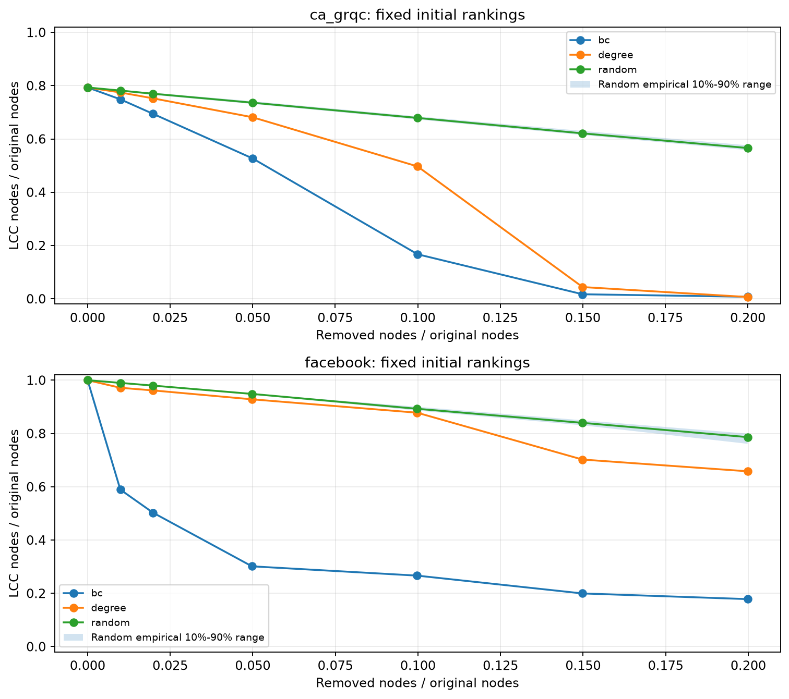

RANKING
下载 CSV ↗全图介数 Top 10
标准无向归一化：raw / ((n−1)(n−2)/2)。排名不包含端点贡献。
用全图介数识别中转位置，再用结构失效实验检验排名。
默认按全图介数降序。高介数表示最短路径的中转作用，不等于真实人物的重要性。
标准无向归一化：raw / ((n−1)(n−2)/2)。排名不包含端点贡献。
点击左侧柱条、下方表格或局部图节点，即可检查原始指标。
| 排名 | 原始 ID | 度数 | 度排名 | raw 介数 | 归一化介数 | 分量大小 | 割点 |
|---|
所有策略使用原图固定排名。随机曲线来自20个独立可复现排列，阴影为10%–90%经验分位范围。
原图不连通时初始值可以小于1；经验分位带不是置信区间。该模拟不预测现实行为。
散点使用完整原图，标注介数前十节点；坐标使用对称对数尺度。

点击可打开完整分辨率图片。
Python运行完整算法，浏览器展示已有结果。页面切换与筛选不会重新执行全图介数。
| 模式 | 实际进程 | 重复 | total 中位数 / s | steady 中位数 / s | 观察 S_total |
|---|
total 包含启动、计算通信归并、归一化及清理；steady 排除启动和清理。不同亲和性协议的记录不混合。
先看小图，再读公式。这里解释真实结果使用的定义；交互例子只计算五个教学节点，不会重跑两张真实网络。
衡量节点承担多少最短路径中转份额的指标。
正向统计路径数量，再反向累计贡献的计算方法。
图记为 G = (V, E)：V是节点集合，E是连接集合，n = |V|，m = |E|。每条边长度为1，可以双向走；清洗时去掉自环与重复边，保留所有已知节点和连通分量。
N(v)是v的邻居集合。平均度为2m/n，因为一条无向边分别给两端各贡献1度；n=0时另作零值处理。
s、t是不同端点；σst是两者之间最短路径的条数，σst(v)是其中以v为内部中转点的条数。每组无序端点只算一次；不可达时整项按0处理，不做0/0。
除去v，还剩n−1个节点，能组成(n−1)(n−2)/2组无序端点对。n≤2时分数为0。非连通图仍使用原始全图n；归一化不会改变同一张图内的排名。
度数、介数和割点回答不同问题。Facebook的58号只有12个邻居，但介数排第9；高介数表示拓扑中转作用，不是现实人物价值。
橙色边覆盖当前全部最短路径；绿色节点是端点，深色外圈是观察节点。也可以直接点击节点。
单个端点对的贡献，不等于该节点的全图介数。
把全部10组无序端点对都检查一遍；每个节点排除以自身为端点的4组。归一化分母为(5−1)(5−2)/2 = 6。下表由这个教学图的路径份额累计得到。
| 节点 | 度数 | raw介数 | 归一化介数 |
|---|
S的raw为0.5，A、B各为1，T为3.5，U为0；与Python中的五节点手算测试一致。T的3.5 = S↔U的1 + A↔U的1 + B↔U的1 + A↔B的0.5。
像水波一样按距离扩展，记录最短距离dist、路径数σ和所有最短路径前驱P。等长路径都保留，不只挑其中一条。
按照BFS访问顺序逆序处理，利用路径数比例，把远处节点的贡献分配给前驱。δ表示固定起点下的累计依赖。
重复上述过程n次，排除起点本身的端点贡献。无向图两个方向重复计数，最终统一除以2，再归一化。
为什么不逐条列出所有路径？S到U的最短路可复用“S到T的最短路再接一条T—U”的结构。大图的等长路径可能很多，Brandes只保存计数与前驱，再合并回传贡献。上面的五节点路径枚举仅用于教学展示。
本演示固定起点S，与上方端点对选择无关。d是距离，σ是路径数，P是前驱；δ是该起点的累计依赖，不是最终全图介数。
| 节点 | 距离 d | 路径数 σ | 前驱 P | 当前 δS | 本源最终写入分数 |
|---|
σs(s)=1；其余节点初始为0。Ps(w)只包含满足dists(w)=dists(v)+1的邻居；不可达节点不进入反向累计。
对每个v∈Ps(w)执行；“+=”表示累加而非覆盖。“1”代表目标w自身的份额，δs(w)代表经w继续到更远目标的份额。路径数比值负责公平分摊；最后只在v≠s时把δs(v)加入分数。
全起点时间写作O(n(n+m))；连通无权图常简写为O(nm)。每个进程需要O(n+m)量级的图与单源工作空间。这是复杂度描述，不是实际秒数保证。本项目σ使用Python整数，贡献与归并使用float64；“精确”指全起点，而非任意精度算术。
源码对应：brandes.py中的single_source_accumulate与finalize_scores。NetworkX是独立正确性参照，实际串并行分数均由本项目同一内核计算。
固定一个起点的计算不依赖其他起点的中间结果，所以可以分工；同一次单源计算内部，BFS与逆序累计依然有先后依赖。
serial一个计算进程遍历所有起点，贡献直接累加到同一个向量。
static_batches按batch_id % p分配。下例p=2：进程0做批0、2，进程1做批1、3；空闲时不会改领另一进程的批次。
dynamic_batches同样的批次放进公共队列；哪个进程先空闲，哪个取下一批。可减少等待，也会增加队列管理开销。
上面的批次条是分工原理示意，不是计时或CPU利用率。若有8个起点、B=2，则4批依次为[0,1]、[2,3]、[4,5]、[6,7]。
Sj是进程j负责的起点集合；集合之间不重叠，合起来覆盖所有节点。每个局部向量长度都是n，各进程结束时回传一次总向量；主进程归并后统一做无向修正和归一化。
Facebook配对复测的一个p=4、B=128案例中，四个历史PID分别处理1024、1024、967、1024个起点，合计4039个起点、32批。每个起点和批次都检查不重不漏。
spawn创建独立进程，每进程获得完整邻接表副本；本项目没有共享内存零复制。PID与计数说明实际分工，不能代替逐时CPU利用率证据。真实图正式主计时没有逐批时间线。
能沿边互相到达的一组节点叫连通分量。节点数最多的分量就是LCC（最大连通分量）；“LCC大小”是这个集合的节点数。
Gk是删除排名前k个节点后的剩余图，q是请求移除比例，rk是实际比例。纵轴分母固定为原图节点数n，不是n−k；若没有剩余节点，LCC大小按0计。
假设原图100节点，删除20节点后分成60和20两个群体，LCC/n = 60/100 = 0.6；若除以剩余80节点，会变成另一个指标0.75。本项目主曲线使用前者。
介数、度数和随机策略都从原图开始，使用原图固定排名，不每删一次重排。随机结果来自20个独立可复现排列，阴影是10%–90%经验分位范围，不是置信区间。相同移除比例下LCC/n越低，说明该策略造成的连通性破坏越强；不能推广成现实人员价值或故障预测。
ca-GrQc的dynamic(p=4)：16.252 / 6.479 ≈ 2.509倍，效率约2.509 / 4 = 62.7%。效率是加速比相对进程数的比值，不是CPU利用率。这里用展示表的四舍五入值作读表示例。
atol控制接近0的绝对误差，rtol随对照值大小缩放。实际全节点检查覆盖raw和normalized，并检查有限值；真实图参照使用atol=10⁻⁸、rtol=10⁻⁷。浮点归并顺序不同可能产生末位差异。
| 字段 | 本项目具体含义 |
|---|---|
| total | 完整算法调用墙钟，包含工作进程启动、计算通信归并、最终缩放、清理及必要调度开销；不包含下载、清洗、NetworkX参照和画图。 |
| steady | execute_reduce + finalize，排除启动与清理。steady加速与total加速必须分别标注。 |
| 重复 / median | 相同条件整次重跑，汇总中位数，而非挑最快一次。“重复3次”不是3个进程，也不是只算3个起点。 |
| 观察比值与协议 | Facebook首轮单工作进程也出现异常快值，不能据该轮四进程比值声称可靠多核加速；固定亲和性的后续配对复测单独统计。 |
启动、通信、任务不均和系统调度都会影响结果，四个工作进程不保证四倍加速。固定四个逻辑CPU也不等于已确认四个物理核心。
节点是网络位置。原始ID保留输入编号，index是升序映射后的连续数组位置。例如ca-GrQc原始ID13801对应索引2714，展示与CSV仍使用13801。
边记录连接，邻居是与v直接相连的节点。简单无向图中deg(v)=|N(v)|；直接连接多，不代表一定承担更多跨群体最短路。
每条边长度为1、可双向走，不保留自环或重复无向边。关系强弱、方向、现实传播概率不在这个模型里。
σst是s到t的最短路径条数。σst(v)只数内部经过v的那些路径；一半最短路经过v，该端点对就贡献1/2。
raw累加不含自身端点的最短路份额；normalized再除以(n−1)(n−2)/2。本项目不抽样起点，也不把匿名分数解释为个人贡献。
不同分量之间没有路径。孤立点自己也构成一个分量。ca-GrQc保留了全部355个分量，不只计算最大分量。
LCC大小是最大分量的节点数；LCC/n是它占原图节点总数的比例。原图本就不连通时，零删除的起点也可能小于1。
在完整图中单独删除v后，连通分量数比删除前更多，v就是割点。高介数节点可以不是割点，例如Facebook的1085号。
单源指固定s。无权图中BFS按距离0、1、2……扩展，建立最短距离与路径计数；全起点Brandes要让每个节点都做一次s。
Ps(w)包含所有与w相邻、且比w离s近一步的节点。必须保留全部等长最短路前驱，不是只记一棵搜索树。
δs(v)累计从s到其他目标的最短路经过v的份额。逆序处理能复用远端结果；v=s时不加入其自身分数。
B=128表示一批最多128个起点，不是128个进程。最后一批可以较短。小批便于调度，大批减少队列开销，不能预设越小越好。
p计计算工作进程数，PID是操作系统分配的身份编号。spawn启动新解释器；每个进程读取完整图副本并保有自己的分数向量。
每个进程只累计所负责起点的贡献，但向量覆盖所有n个节点。主进程相加这些向量，最终统一除以2和归一化。
介数与度排序以原图为准，删除后不重排。随机阴影描述20个独立排列的10%–90%经验分位，不是置信区间或真实用户流失率。
精确表示没有抽样起点。路径数用Python整数，贡献使用float64；不同求和顺序可能影响末位，所以检查所有节点是否在预先声明容差内一致。
没有匹配的术语，试试“介数”“LCC”或“进程”。
公式与项目实际实现核对：Brandes单源内核、无向统一缩放、spawn批次归并，以及固定排名失效协议。
正文、公式与教学交互均为本地HTML/CSS/JS，无需CDN或在线公式库；参考链接仅在主动点击时访问外网。